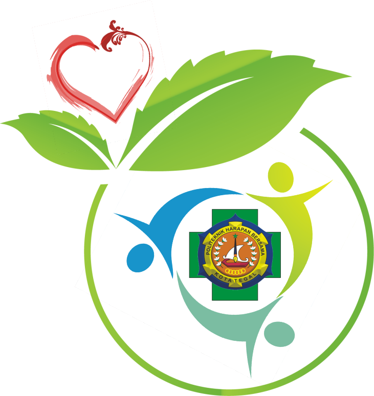

Tentang Kami

Rumah Sakit Harapan Bersama
RS Harapan Bersama yang akan berdiri pada tahun 2040 sebagai rumah sakit didaerah Tegal.
Untuk menjangkau masyarakat yang lebih luas di Tegal dan sekitarnya.
RS Harapan Bersama menerapkan pendekatan yang selalu berfokus pada pasien,
baik dalam layanan maupun fasilitas kesehatan. Hal ini tak lain bertujuan untuk
memberikan layanan yang lebih baik dengan senantiasa memegang prinsip Good Corporate Governance dan Good Clinical Governance.